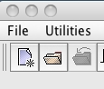
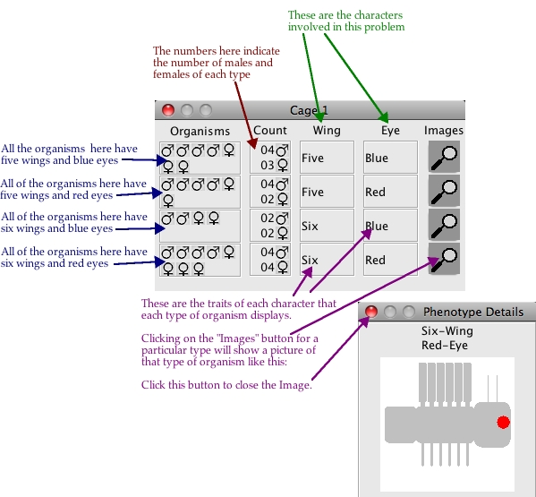
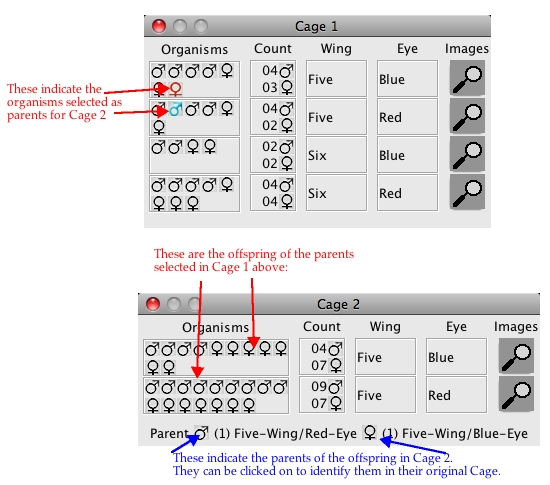
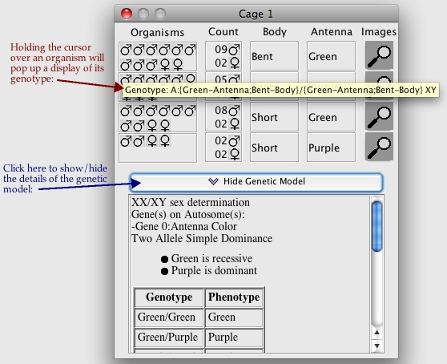

VGLII - Virtual Genetics Lab version II
The Goals and Objectives of the Lab
The Genetic Models found in VGLII
Running VGLII - Virtual Genetics Lab II
How To Start A New Problem
Cages in Regular Mode
Cages in Practice Mode
How To Open Work You have Saved Previously
How to Save Work in Progress
How to Save Your Work Under A Different Name
How to Close A Problem in Progress
How to Cross Two Organisms
How to print the work you have done so far
How to Print to File
How to summarize the results from a set of cages
Close/Re-open Cages
Re-arrange Cages
How to Get Details about each Phenotype
How to Get Details about VGLII
The Goals and Objectives of the Lab
When you start the problem you are given a cage of a population of creatures collected in the
field. Each of these creatures will display one of two to six different traits
of one to three particular characters (for example, if the character is Body Color, the traits
might be Red Body and Green Body). Your task is to discover how these characters are inherited.
You determine this by crossing particular individuals
and observing their offspring. You then
use the resulting data to deduce the underlying
genetic models that determines the inheritance of these characters. You
must decide when
you have collected enough information to be convinced that you are right - the program will
not tell you the right answer (except when in Practice Mode).
When you start a new problem, VGLII randomly chooses one to three characters from a list of possible
characters.
It then randomly chooses genetic models from a list of
possible genetic models. The range of possible models is be custom-configured by your
instructor when she creates a problem type; different problem types can have greater or
fewer possible models and Practice Mode can be enabled or disabled
for a particular problem type. Since this assignment is random, the same character
can be inherited in different ways in different problems.
Next, VGLII chooses particular traits of each character and assigns them randomly
to particular genotypes. A population of individuals with random genotypes is then generated;
these individuals are placed in Cage 1.
Your task is to cross individuals from different
cages and observe the resulting offspring.
From these data, you will determine the genetic
models of how your particular characters are inherited.
The Genetic Models found in VGL
All the problems in VGLII involve genetic models with genes that have either two
or three alleles. Based on
this, there are several features that can vary:
- The number of alleles. This can be either:
- Two alleles. In this case, there are two possible ways
these alleles can interact:
- Simple Dominance: The heterozygote has the same
phenotype as the dominant homozygote. That is, with two alleles A and a:
- AA = tall
- Aa = tall
- aa = short
- Incomplete Dominance: The heterozygote has a
different phenotype than either homozygote. In nature, this is usually
intermediate; in VGL it need not be.
- AA = tall
- Aa = medium
- aa = short
- Three alleles. In this case, there are two different possible
ways these alleles can interact:
- Hierarchical dominance: A is dominant to B and C;
B is dominant to C; C is reccessive to all.
- AA = green
- AB = green
- AC = green
- BB = red
- BC = red
- CC = blue
- Circular dominance: A is dominant to B;
B is dominant to C; C is dominant to A.
- AA = green
- AB = green
- AC = blue
- BB = red
- BC = red
- CC = blue
- Whether the character is sex-linked or not; this can be either:
- Not sex-linked - the gene for the character is carried on an autosome
so it is inherited identically in both sexes.
- Sex-linked - the gene for the character is located on a sex-chromosome
so it is inherited differently in different sexes. This has two forms:
- XX/XY Females are XX; males are XY.
Here, Y carries no genes except those needed to make the organism male.
- ZZ/ZW Females are ZW; males are ZZ.
Here, W carries no genes except those needed to make the organism female.
- If genes on the same chromosome are linked or not; the recombination
frequency can vary between 0% (completely linked) and 50% (completely unlinked).
Running VGLII - Virtual Genetics Lab
To run VGLII simply double-click on the VGLIIx.x file.
Note: Be sure to have the Problems folder in the same
folder as the VGLIIx.x file. The toolbar buttons are shown below:
How To Start A New Problem
When you start VGLII, you will see a toolbar like this:

From the "File" menu, select "New Problem" or simply click on the "New Problem" button on the
toolbar and you will see a list of problem type files. The files are listed in increasing
order of difficulty. Additional problem type files can be generated using the VGLAdmin
program. Select the file and click on the "Open" button.
Once you start a problem, a window (Cage 1) will be opened up on the screen.
This cage is the starting point for your project. The organisms can be, but are not
necessarily, pure-breeding.
Cages in Regular Mode
One cage in Regular Mode is Shown below:

A sequence of crosses is shown below:

This would be written out as:
Cross 1:
Parents: Five/Red male from Cage 1 X Five/Blue female from Cage 1
Offspring: 11 Five/Blue
(in Cage 2) 16 Five/Red
Cages in Practice Mode
If your instructor has enabled Practice mode for a particular problem, you will be able to
see details of the "answer" - the genetic model for each character and the genotype
of each organism.
In practice mode, a cage will look like this:

This is the same as in Regular Mode, except that the model and genotypes can be seen.
How To Open Work You have Saved Previously
 You can use this feature to load up previously saved problems that you might have been
working on. To open a problem you can either select "Open Problem" from the drop-down
"File" menu or simply click on the "Open Problem" button on the toolbar. A dialog box
will open up to assist you in selecting a file. Browse to the directory in which the
problem file is stored. Select the file and click on the "Open" button. VGLII will read
the file and will open up the problem and bring it in the state* you last left it in
before you saved and closed the problem.
You can use this feature to load up previously saved problems that you might have been
working on. To open a problem you can either select "Open Problem" from the drop-down
"File" menu or simply click on the "Open Problem" button on the toolbar. A dialog box
will open up to assist you in selecting a file. Browse to the directory in which the
problem file is stored. Select the file and click on the "Open" button. VGLII will read
the file and will open up the problem and bring it in the state* you last left it in
before you saved and closed the problem.
*state - state in this context is defined as the entire collection of cages created by
the user, including cages that were created by the user but were kept closed during the
course of problem work. Simply stated, this means that when you open a problem, VGLII
will display all the cages created by you up until the point you closed the problem.
How to Save Work in Progress
 You can use this feature to save your current work to a file. To save your work you can
either select "Save" from the drop-down "File" menu or simply click on the "Save" button
on the toolbar. A dialog box will open up to assist you in saving your work to a file in
the directory of your choice. Browse to the directory in which you want to save your work.
in the "File Name" field enter the name of the file you want you want to save your work
as. Then click on the "Open" button. This will create and open a file with the name
as specified in the field and will store your current work in it. The file will have a
.wrk extension.
You can use this feature to save your current work to a file. To save your work you can
either select "Save" from the drop-down "File" menu or simply click on the "Save" button
on the toolbar. A dialog box will open up to assist you in saving your work to a file in
the directory of your choice. Browse to the directory in which you want to save your work.
in the "File Name" field enter the name of the file you want you want to save your work
as. Then click on the "Open" button. This will create and open a file with the name
as specified in the field and will store your current work in it. The file will have a
.wrk extension.
How to Save Your Work Under A Different Name
 This is the same as "Save a Problem" except that it creates a copy of the file you have
already created but with a different name.
This is the same as "Save a Problem" except that it creates a copy of the file you have
already created but with a different name.
How to Close A Problem in Progress
 You can use this feature to close a problem that you have been working on. To close the
problem that you have been working on select "Close Problem" from the "File" menu or simply
click the Close button on the toolbar. A
dialog box will pop-up to confirm your decision to close the problem. If you select "Yes"
and if you have any unsaved work then the application will prompt you to save your work.
If you select "Yes" then a dialog box will pop-up to assist you in saving your work to a
file in the directory of your choice. If you select "No" the application will close the
problem without saving any of your work.
You can use this feature to close a problem that you have been working on. To close the
problem that you have been working on select "Close Problem" from the "File" menu or simply
click the Close button on the toolbar. A
dialog box will pop-up to confirm your decision to close the problem. If you select "Yes"
and if you have any unsaved work then the application will prompt you to save your work.
If you select "Yes" then a dialog box will pop-up to assist you in saving your work to a
file in the directory of your choice. If you select "No" the application will close the
problem without saving any of your work.
How to Cross Two Organisms
 To cross two organisms you first need to select a male organism and a
female organism from any of the open cages (the male organism and the female organism
can be from different cages). To cross these to organisms and create the set of offsprings
that they would produce, select "Cross Two" from the "Utilities" menu or click on the
"Cross" button on the toolbar. This will create a new cage containing the set of
offsprings of the two parents used in the cross.
To cross two organisms you first need to select a male organism and a
female organism from any of the open cages (the male organism and the female organism
can be from different cages). To cross these to organisms and create the set of offsprings
that they would produce, select "Cross Two" from the "Utilities" menu or click on the
"Cross" button on the toolbar. This will create a new cage containing the set of
offsprings of the two parents used in the cross.
How to Print the work you have done so far
 To print the field population (Cage 1) and all the cages you have
generated so far, either click the Print button (shown at left), or select "Print Work" from the "File"
menu. You may need to set up the printer first; you do this by selecting "Page Setup" from the "File"
menu.
To print the field population (Cage 1) and all the cages you have
generated so far, either click the Print button (shown at left), or select "Print Work" from the "File"
menu. You may need to set up the printer first; you do this by selecting "Page Setup" from the "File"
menu.
How to Print to File
 You can use this feature to store your work into a
file in printer friendly format; this file can be displayed in any web-browser and many word
processors.
To print to a file select "Print To File" from the "File" menu or click on the "Print to
File" button on the toolbar. This will open up a Dialog window to allow you to give the
file a name and destination of your choice. Once you have given the file a name and
decided on the location click on the "Print" button. Your work will be saved in a
printer friendly format into a file. The file will have a .html extension.
You can use this feature to store your work into a
file in printer friendly format; this file can be displayed in any web-browser and many word
processors.
To print to a file select "Print To File" from the "File" menu or click on the "Print to
File" button on the toolbar. This will open up a Dialog window to allow you to give the
file a name and destination of your choice. Once you have given the file a name and
decided on the location click on the "Print" button. Your work will be saved in a
printer friendly format into a file. The file will have a .html extension.
How to summarize the results from a set of cages
By selecting one or more Cages and choosing "Create Summary Chart" from the Utilities menu, you can
have VGLII count the number of each type of organism found in the selected set of Cages.
First, double-click on each of the cages to select them for summarization; their inner border will turn red
to show that they are selected. You can unselect selected cages by double-clicking on them; you
can unselect all cages by choosing "Unselect All" from the Utilities menu.
Once you have selected a set of Cages, choose "Create Summary Chart" from the Utilities menu and you
will see something like this:
The top line shows that this was a summary of cages 7, 8, 9, 10, & 11.
These were produced from crosses of two heterozygous parents; thus, we would expect a 3:1 ratio.
The observed ratio 120:26 is very close.
You can choose which Characters to summarize by selecting the appropriate Characters at the top
of the window.
Close/Re-open Cages
You can use this feature to close/re-open any of the cages you have created till now.
Select "Cages" from the "Utilities" menu. A window will pop-up with the list of all
the cages you have created till now. The ones which are currently visible will be checked
on the rest will be check-off. Click on the "Visibility" option beside each Cage listing
to make that Cage visible/invisible.
Re-arrange Cages
You can use this feature to re-arrange the cages you have created in an orderly fashion.
Select "Re-arrange Cages" from the "Utilities" menu. All the cages that are currently
visible will be lined up one below the other and left to right.
How to Get Details about each Phenotype
To get more details and a detailed diagram about the phenotype of organisms in a cage,
you can click on the image of the phenotype shown in the cage. This will pop-up a bigger
and more detailed image of the organism highlighting the phenotype in question. Note that
these images are rather primitive; they are only designed to illustrate what the combined
phenotype might look like. One is shown below:
How to Get Details about VGL
To get more details about the VGLII application you can select "About VGLII"
from the "Help"
menu or simply click on the "About VGL" button. This will pop-up an information window.